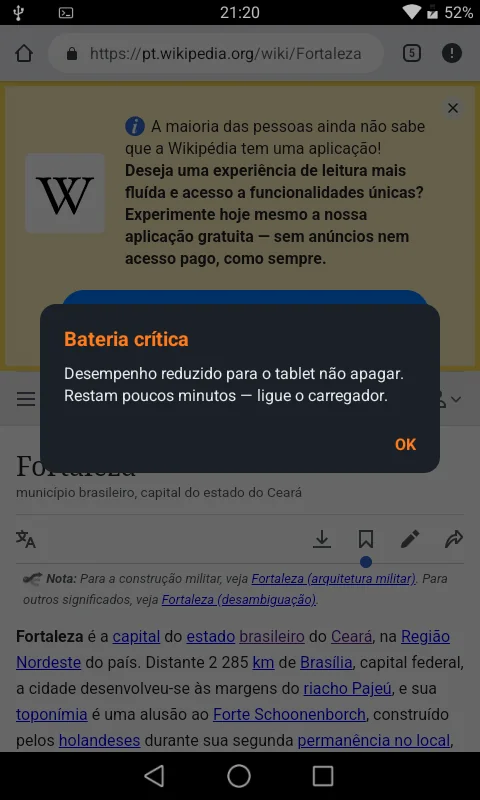

Neste artigo
Tinha um Multilaser M7s Dual Core parado em casa, travando em tudo. Rockchip RK3026, dois núcleos a 1 GHz, 512 MB de RAM, Android 4.4.2 de fábrica. A pergunta inicial foi pequena: dá pra otimizar isso só pelo cabo USB, com depuração ligada? Não existia nenhuma ROM alternativa pra esse aparelho, então a resposta virou o Taleszin OS, uma ROM própria com tela inicial, tema, serviços de boot e apps nativos.
A regra que guiou o projeto todo veio cedo: num aparelho desses, quem decide é o hardware, e eu só sei o que o hardware quer depois de medir.

Build reproduzível a partir do firmware oficial
A primeira decisão foi não versionar firmware nem APK de terceiros. O repositório tem scripts, configuração e um overlay. O build.sh lê o zip oficial da Multilaser que você fornece, baixa os apps por URL fixa conferindo sha256 e monta o system.img. A gravação é pelo Mac com rkflashtool, depois de um backup completo em modo loader.
Antes de mudar qualquer coisa, li o firmware. Strings e dexdump do framework.jar, do services.jar e das libs nativas, mais o dmesg e o sysfs lidos ao vivo. Isso rendeu achados que nenhum fórum ia me dar:
- O
build.propde fábrica definero.kernel.android.checkjni=0e, mais abaixo,=1. Vale o último, então todo app pagava a validação de cada chamada JNI. - A propriedade
wifi.supplicant_scan_intervalé placebo: nada no framework nem nowpa_supplicantlê esse valor. O que conta é um Settings Global, aplicado no primeiro boot. - O tzdata de 2014 ainda tinha horário de verão no Brasil, extinto em 2019. O build compila o
zicatual e reempacota no formato que o bionic do 4.4 entende. - A resolução da tela saiu por dedução: o clock do LCD dividido pelos 67 fps do
dmesgdá uns 554 mil pixels por quadro, o que bate com 800×480 e descarta 1024×600.
Bateria gasta e memória apertada
Coloquei telemetria antes de otimizar. Um serviço em shell grava CSV com tensão, frequência de CPU, memória e o app da frente. Os primeiros dados foram feios: desplugado a 100%, a tensão caía na hora pra uns 3,80 V, e o tablet desligava sozinho sob carga do navegador. O sensor de porcentagem do kernel estima por tensão e mente nos dois sentidos, e o voltage_now congela entre degraus. A tensão real passou a vir do ADC lido direto.
Daí nasceu o m7s-powerguard, um processo sh dormindo que lê quatro nós de /sys/class/power_supply. Na bateria, ele limita a CPU a 816 MHz, porque o degrau de 1008 MHz pede a maior tensão do núcleo e os picos de corrente derrubam uma bateria velha. Perto do fim, reduz brilho e CPU em degraus e desliga limpo com a ShutdownActivity do próprio 4.4, exigindo duas leituras baixas seguidas pra não cair num pico isolado.

Os travamentos tinham outra causa. A telemetria de um dia mostrou o tablet 15 minutos parado com load 25, sem conseguir nem gravar o log. O navegador ocupava uns 165 MB dos cerca de 400 úteis, e o low memory killer do kernel 3.0 contava o ashmem do Chromium como cache descartável, então nunca matava nada. A solução foi o m7s-sentinela: a cada 5 segundos ele calcula a memória realmente livre (MemFree + Cached − Shmem − Mapped) e, em aperto confirmado, mata um processo só, do menos importante pro mais. Junto veio uma caixa-preta que, no boot seguinte, diz como a sessão anterior acabou: desligamento limpo, bateria, travamento.
Faltava o reset. Antes, só um palito no furo resolvia. O m7s-botao lê o botão liga/desliga como evento cru do evdev, direto do kernel, e funciona mesmo com o Android travado:
# evdev cru: struct input_event de 16 bytes
set -- $(dd bs=16 count=1 <&3 | od -b)
# type 001 = EV_KEY · code 164 = KEY_POWER
[ "${10}${11}" = 001000 ] || continue
# segurou 8 s: sync, só-leitura, reboot
echo s > /proc/sysrq-trigger
echo u > /proc/sysrq-trigger
echo b > /proc/sysrq-triggerEsses scripts rodam no mksh do 4.4, que não se comporta igual ao shell do macOS. Um ${e%%|*} que funciona no Mac devolve vazio no tablet. Desde então, script do overlay só é dado como testado depois de rodar no aparelho.
A memória ganhou zRAM de 128 MB, KSM e ro.config.low_ram. A KSM custa por volta de 1% de um núcleo e devolve uns 18 MB. Em 512 MB, vale.
Apps nativos sem Gradle
Os apps da ROM são Java puro, minSdk 19, sem biblioteca nenhuma. O build de cada um é um script de 30 linhas que chama as ferramentas do SDK direto:
aapt2 compile --dir res -o build/res/res.zip
aapt2 link -I android.jar --manifest AndroidManifest.xml \
--min-sdk-version 19 --target-sdk-version 19 --java build/gen ...
javac -source 8 -target 8 -bootclasspath android.jar ...
d8 --release --min-api 19 --lib android.jar ...
zipalign -f -p 4 ... && apksigner sign ...Não tem Gradle nem dependência que exija API 21, e o resultado cabe no aparelho: o Fliperama tem 50 KB, o leitor Estante e o Piano uns 80 KB, o Diagnóstico 120 KB. App pequeno também é dexopt rápido e menos RAM, que é o que esse tablet tem de mais escasso.
A Estante é o melhor exemplo de restrição ditando desenho. A WebView do 4.4 não tem nada de leitor, então a paginação estilo Kindle é feita com colunas CSS (-webkit-column-width do tamanho da tela), sem rolagem e sem linha cortada. Capítulos acima de 150 KB são quebrados em partes de uns 60 mil caracteres, fechando e reabrindo as tags nos cortes, porque paginar 1 MB de uma vez levava mais de 15 segundos no RK3026. O capítulo é lido direto do zip, sem extrair nada pro /data.


O tema foi a parte mais chata de fazer funcionar. Os hooks em Xposed na SystemUI trocam o azul Holo pelo laranja e o layout de tablet pelo de celular. O servidor oficial do Xposed não responde mais, então o instalador e o framework para KitKat vieram do Internet Archive, conferidos por hash e assinatura. Pra carregar com o SELinux em enforcing numa gravação limpa, precisei corrigir os contextos dos arquivos.
O que ficou de fora
O touch roda em polling e a memória DDR não baixa de frequência em ocioso. As duas coisas só mudam no kernel e ficaram anotadas como candidatas pra uma versão 2. E a própria documentação da ROM admite o óbvio: o maior ganho possível é trocar a bateria de 2.200 mAh de 2014, que hoje rende menos de uma hora de tela. Software segura o apagão por alguns minutos. Bateria nova daria horas.
O código está no meu GitHub.

Full stack de Fortaleza. Ciência da Computação na UECE, cofundador e CTO do Leap Notes, tech lead do Portal da História do Ceará.